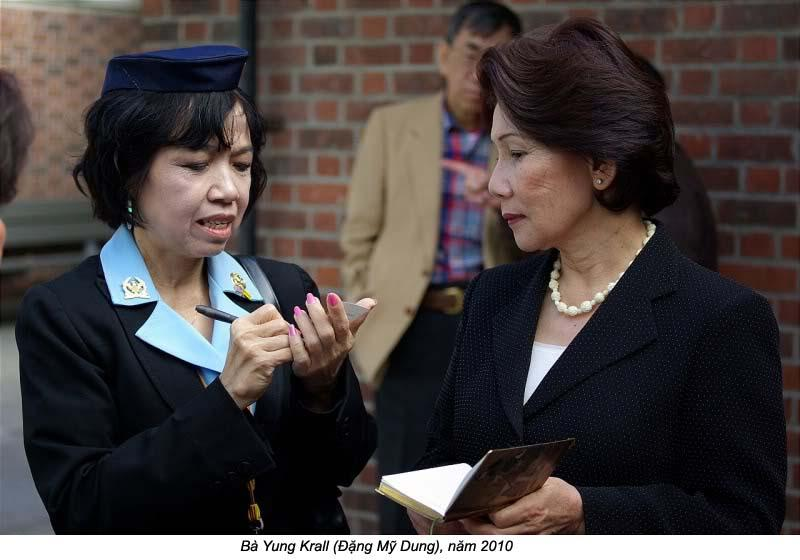

Chương 3

au một thời gian khá lâu, kể từ ngày ba tôi và anh Khôi ra Bắc, chúng tôi phải ở lại Bang Thạch, tôi vẫn nghĩ ngợi thắc mắc về sự mất mát khủng khiếp này.
Tôi đã nếm mùi khói lửa của chiến tranh. Tôi hiểu trách nhiệm người dân yêu nước khi phải sống dưới ách đô hộ của phương Tây, qua đời sống của gia đình tôi, và tôi cũng hiểu đại khái về xã hội chủ nghĩa. Nhưng tôi không hiểu sức mạnh của nó đã đánh vào điểm nào trong trái tim của ba tôi, người mà đêm khuya vẫn dựng đầu chị em tôi dậy để nhắc nhở: “Ba thương các con lắm!”.
Lúc còn nhỏ “xã hội chủ nghĩa” ví như là một ngọn gió thổi từ xa tới. Nó trong lành. Nó vừa lạ vừa quen, quyến rũ một các lạ lùng. Nó quyến rũu vì ba tôi chính là nó, vì ba tôi là tiêu chuẩn cho những nguyên tắc cơ bản của nó. Những khúc dân ca của Đông Au, những điệu múa của người Liên Xô, cho tới lá cờ lưỡi liềm của họ, đối với tôi cũng không có gì xa lạ, vì Liên Xô không phải là “ngoại bang” đối với ba tôi, mà nó là “đồng chí” của ông.
“Xã hội chủ nghĩa” là những tiếng thông thường trong gia đình tôi, nhưng tôi cũng biết có nhiều người trong làng, kể cả bà em của má tôi, sợ nó lắm. Lúc ba tôi vắng nhà, mấy người em bà của cô cậu má tôi nói họ sợ xã hội chủ nghĩa như ma quỷ, như dịch tả,, như gió độc.
Hai chữ “Cộng sản” ít được nhắc tới. Có lẽ bốn chữ “xã hội chủ nghĩa” nghe hay hơn. Nó cũng che giấu được lối cai trị tàn bạo ở Bắc, do những lãnh tụ cộng sản chủ trương. Người em bà con của má tôi thường nói lén như vậy. Cậu kể cho má tôi ở ngoài Bắc, Cộng sản giết chủ điền, cướp tiền của người giầu. Họ dám giết cha mẹ nếu cha mẹ không nghe lời Chánh phủ. Trong khi đó, các đảng viên Cộng sản ở miền Nam còn là những Việt Minh thật thà, yêu nước, thương dân, không hung bạo như Cộng sản ngoài Bắc.

Lúc bấy giờ, nếu lớn tuổi hơn hay tinh khôn hơn một chút, có thể tôi đã hiểu, giữa ba má tôi có một con sông ngăn cách, mà hai năm ba đi tập kết về Bắc, con sông đó cũng không nhỏ lại; cũng không có cây cầu nào bắc được cho hai người xích lại gần nhau trong tư tưởng. Má tôi muốn tự do, tự lập. Còn ba tôi, ông theo chủ nghĩa của ông Hồ ngoài Bắc; ông phục vụ cho đảng, dân chúng phục vụ ông để đảng được mạnh. Tuy vậy, trong tình vợ chồng, ông bà vẫn khăng khít, thương yêu nhau, vì chính sự trái ngược đã bổ túc cho nhau để có thể chung sống trong hạnh phúc gia đình. Nhờ bà gánh vác và bảo vệ gia đình, ông được tự do làm một nhà cách mạng gương mẫu. Ngoài ra, nên giáo dục cổ xưa đã đào tạo má tôi thành một vợ thuỷ chung và gương mẫu. Lấy chống, bà chỉ biết có chống, khi có con, bà hết lòng lo cho con cái. Đó là người đàn bà của nền nếp cổ xưa thuần tuý Á Đông. Phải nói rằng ba tôi đã may mắn lấy được má tôi, để ông có tất cả thì ông mới vững tâm làm cách mạng.
Đời sống của ba tôi trong thời kháng chiến chống Pháp luôn luôn bất ổn, nên cứ thay đổi hoài hoài. Má tôi kiên nhẫn thích ứng nhanh chóng với sự thay đổi đó. Nhờ có mà, chúng tôi được sống êm ấm trong tình thương của cả cha lẫn mẹ. Nơi nào có mặt ba tôi, nơi đó sẽ có nhiều mầm non cách mạng. Trong khi đó, nơi nào má tôi xuất hiện, đàn bà con gái trong làng đó ham học nữ công. Nhà chúng tôi ở tươm tất, vẹn khéo. Nhờ vậy, ba tôi lúc nào cũng vui tươi, và hài lòng với hạnh phúc gia đình.
Không như những gia đình khác, gia đình tôi được tự do nói chuyện và nghe chuyện. Chúng tôi nghe đủ mọi thứ chuyện, từ chuyện đám cưới, đám hỏi, đến chuyện sanh để, chết chóc… nghĩa là chẳng còn thiếu một văn học gì hết. Tuy nhiên, cũng có một vài điều mà chúng tôi không được phép nhắc tới, đó là nhu cầu ham muốn về vật chất. Thật ra, chỉ khi có mặt ba tôi là chúng tôi không dám nói tới vấn đề đó, vì ông quan niệm rằng ham muốn vật chất là còn làm nô lệ cho vật chất, còn dựa vào thế giới bên ngoài (như thằng Tây chẳng hạn). Minh phải “tự lực cánh sinh”, ba tôi nói như vậy hoài. Khi ông đi vắng, chúng tôi vẫn lén thầm thì bàn với nhau về những nhu cầu vật chất.
Kể từ ngày ba tôi cắt hết mối liên hệ với thành phố, đưa vợ con vô vùng “giải phóng”, gia đình tôi đã có cuộc sống gương mẫu dưới sự điều khiến của đảng, không còn lệ thuộc vào ai, và chúng tôi đã cố gắng “tự lực cánh sinh”. Nhưng thiệt thà mà nói, một người đàn bà với 6, 7 đứa con thơ đi theo ông chồng làm cách mạng, thì tay chân, sức lực và thì giờ đâu mà “tự lực cánh sinh”. Mà lén ba, nhờ ông ngoại bà ngoại tiếp tế, để có thêm tiền ăn. Đi tới đâu thì dân ủng hộ đất đai nhà cửa tới đó. Vậy thì ý nghĩa của “tự lực cánh sinh” không còn trung thực nữa.
Bạn bè của ba má tôi từ thành phố vô thăm, ai nấy đến khen lối sống vô sản của gia đình cách mạng này. Tuy nhiên, họ tỏ ra gần như công khai lòng thương cảm đối với chúng tôi, nhứt là tội nghiệp cho chị em tôi.
Nhưng tôi biết, ba tôi mãn nguyện với tất cả cả những gì ông đạt được. Ông cho là ông đã có hạnh phúc gia đình, và ông hãnh diện khi chọn con đường ông đang đi! Mỗi lần anh chị em tôi than cực, than thiếu thốn và đổ lỗi cho ba đã làm gián đoạn việc học của chúng tôi, thì má lại bênh vực ba. Bà nói thời buổi chiến tranh, những người yêu nước đều phải xung phong giết giặc cho xứng với đấng nam nhi của đất Việt. Rồi bà hỏi: “Tụi con muốn ba theo Tây hay theo kháng chiến?”. Thế là bọn tôi hết dám nói năng gì nữa. Nhưng không dám nói năng không có nghĩa là trở nên yêu thích cuộc sống khổ cực, thiếu thốn trong vùng kháng chiến Vì vậy, thỉnh thoảng má tôi vẫn nghe thấy tiếng thở dài của anh chị tôi, đồng thời bà vẫn phải yểm trợ cuộc tranh đấu hăng say của ba tôi. Chúng tôi kiên nhẫn chịu đựng cuộc sống trước mắt và không thần thánh hoá ông Hồ Chí Minh như trong gia đình của đồng chí ba tôi, vì má tôi không thần thánh một ai ngoài tổ tiên và ông bà của chúng tôi.
Dần dần tôi nhận ra rằng không phải tất cả những ai bỏ thành để ra bưng biền chống Tây đều theo cộng sản. Một năm sau khi gia đình tôi dọn tới Kim Qui, có thêm bốn gia đình khác theo cách mạng cũng tới đó. Bên kia con kinh là nhà của bác Mười Cử và người con gái duy nhứt của bác, chị Kỳ Hoa. Bác Mười gái là bạn học cũ của má tôi. Bà đã qua đời ở Cần Thơ. Phía nam của kinh có gia đình bác Tư Thành. Bác là một cán bộ kinh tài cao cấp của Nam Bộ. Ngang nhà bác Tư, có gia đình bác Nam Hưng và bác Tư Thạch Son. Má tôi cho biết các bác đều là dân “trí thức” đã từ bỏ chăn êm nệm ấm, và cuộc sống sang giầu để đi theo Việt Minh.
Bác Mười Cử theo Việt Minh, những kịch liệt chống lại đường lối của cộng sản. Có lần tôi đã nghe bác nói chuyện với ba tôi mà lớn tiếng chỉ trích đường lối sai lầm của cộng sản. Trong khi đó, hai bác Tư Thành và bác Nam Hưng theo một phe với ba tôi. Bác Tư Thạch Son thì khác. Bác trung lập, theo Việt Minh, nhưng bác không theo cộng sản. Bác không dám chỉ trích hay phê bình công khai cộng sản. Vì lập trường trung lập này mà bác Thạch Sơn bị mấy bác kia kêu là “nửa người nửa ngợm”.
Với sự hiểu biết non nớt của một đứa nhỏ bảy tuổi, tôi cứ thắc mắc hoài về những người đồng tâm, đồng chí chống thực dân Pháp này. Tất cả đều có tâm huyết, đều một lòng muốn giải phóng đất nước khỏi ách nô lệ của bọn thực dân, vậy mà sao giữa họ vẫn có sự ngăn cách? Hồi đó, tôi còn nhỏ quá nên không biết ai phải ai trái. Muốn hỏi ba tôi nhưng không biết hỏi cách nào, tôi không đủ chứ nghĩa để đặt câu hỏi.
Khi ngồi trên ghe nhìn thẳng về phía trước, tôi thấy chân trời và mặt nước ở cuối con sông dính liền nhau. Vậy mà ghe cứ đi hoài đi mãi cũng không đi tới được chân trời. Một hôm tôi hỏi nhỏ anh Khôi: “Chừng nào mình mới tới được chân trời?”. Anh vò đầu tôi rồi nói: “Trái đất tròn, người ở đông ở tây có thể gặp nhau, nhưng không ai tới được chân trời”. Tuy chưa thoả mãn với lời giải thích đó, tôi không dám hỏi thêm, vì sợ anh chê là ngu. Anh thường khen tôi thông mình, làm tôi phổng mũi, tự đắc. Thôi thì cứ để anh tưởng tôi thông mình thiệt. Tôi nghe dân trong vùng giải phóng cũng không tin tưởng vào Chánh phủ Hồ Chí Minh, họ chỉ tin ở hai bàn tay cần cù, chai cứng của họ thôi, ông ngoại tôi càng không ưa ông Hồ Chí Minh. Có lần tôi nghe ngoại kêu Hồ Chí Minh là “thằng già râu”. Tuy nhiên là ba tôi không bằng lòng lời kêu đó, những ông chỉ nhăn mặt thôi, không dám có phản ứng gì.
Cậu Hai Hợi cũng có ảnh hưởng lớn với tuổi thơ của tôi. Qua cậu, tôi biết bên ngoài vùng giải phóng, không hẳn chỉ có người thao Tây hay phản quốc. Người dân trong vùng bị Tây chiếm cũng sống với gia đình riêng của họ. Có kẻ được hưởng hạnh phúc ấm no, thì cũng có người chịu cảnh cơ cực, lầm than. Tất cả đều có bổn phận và trách nhiệm đối với gia đình và tổ quốc, khác gì những người sống trong vùng giải phóng như chúng tôi. Cậu Hai còn cho biết ngoài trách nhiệm làm con cháu “cậu Hồ”, con nít còn có nhiều thú vui và niềm tin khác nữa. Theo cậu, bao giờ hết giặc, chúng tôi được trở về làng sẽ hiểu hơn.
Má tôi thờ cúng ông bà. Tôi thường nghe bà khấn vái, cầu cả người đã khuất. Cũng có khi bà cầu Trời, khấn Phật. Lời khấn của bà nhỏ quá, tôi không hiểu bà cầu xin việc gì. Cậu Hai Hợi không tin ở Trời, Phật. Cậu dậy chúng tôi rằng Trời, Phật ngự ở hai vai con người để chứng giám mọi hành vi, tư tưởng của chúng ta. Cậu vẫn nói rằng nhờ Trời cậu luôn luôn được mạnh giỏi để có sức khoẻ cất nhà cho má tôi. Cậu cũng tạ ơn Trời, Phật mỗi khi qua khỏi một tai nạn. Có lần cậu hỏi tôi đã có bao giờ tôi cầu Trời, Phật chưa? Tôi lắc đầu và cho cậu biết tôi không tin ở Trời, Phật. Không những vậy, tôi còn nói một câu làm cậu giận: “Nếu Trời, Phật thiêng thiệt, cho cháu gặp mặt trong giấc chiêm bao của cháu”. Một hôm, cậu bảo tôi rằng ông Hồ chỉ là một trong hàng tỷ chúng sinh của Trời, Phật và ông Hồ đã đi lạc đường vì ông chủ trương không thờ phượng Trời, Phật. Tất nhiên, tôi không tin lời cậu, một phần vì tôi còn quá nhỏ, phần khác làm sao tôi biết lời nói của cậu là đúng. Trong khi các nhà ái quốc Việt Nam quyết tâm tranh đấu giành độc lập cho nước nhà khỏi ách nô lệ của ngoại bang, Hồ Chí Minh và các đàn em của ông (kể cả ba tôi) lại muốn áp đặt lên đầu lên cổ dân ta một lý tưởng ngoại lai, đó là chú nghĩa cộng sản!
Anh Khôi tập kết ra Bắc, gia đình tôi, gồm người mẹ và sáu con tha, phải tranh đấu hà ngày để tự tồn tại. Má tôi lúc đó có 38 tuổi. Chị em tôi thường hỏi lẫn nhau, bao giờ mới được gặp lại ba và anh Khôi! Thiếu ba và anh Khôi, gia đình h tôi cảm thấy bị mát mát quá lớn. Ngày chia tay, ba ân cần dặn dò chúng tôi: “hãy ngoan ngoãn chờ ba về!”. Nhưng có ai ngờ rằng ngày ba tôi về tôi lại trở thành một nữ điệp viên chống cộng sản.
***
Những người đàn ông ra đi đã đem theo một phần lo sợ, những người ở lại cảm thấy an tâm hơn. Cuộc sống của chúng tôi trong làng Bang Thạch được ổn định nhanh chóng, nhưng không kém ồn ào của một đại gia đình nhiều con nít. Tuy là bà con ruột thịt, bọn chúng tôi cũng ganh ghét nhau. Có lần, mấy người con của cậu Tư Diệp nói với chị em chúng tôi: “Tụi tao là cháu nội của ông bà nên được ông bà thương hơn”. Tôi đâu có chịu thua, liền trả miếng: “Má em là con gái út của ông bà, còn má chị chỉ là con dâu thôi”. Chị Yvonne tức quá, liền chạy đi khóc với dì Bẩy. Dì bèn bắt tôi phải xin lỗi chị. Nhưng từ đó, chị không nhắc tại chuyện cháu nội cháu ngoại nữa.
Chị Yvonne lớn hơn tôi ba tuổi, nên khôn lanh hơn tôi, biết cách khiêu khích và biết làm cho tôi bị đòn, bị phạt. Ngày xưa, người Việt thường không cho con nít nhắc đến tên tục của người lớn, vì cho như vậy là phạm thượng. Vậy mà chị dám nói “Phàm làm người ai cũng biết nhân, nghĩa, lễ, trí, tín”. Phàm là tên má tôi. Tôi tức lắm, những đâu có chịu thua, nhứt định phải trả đũa dù có bị ăn đòn. Tôi nói với Hải Vân: “Chừng nào có dịp ra ngoài chơi, mình hái đu đủ ăn”. Chị Yvonne oà lên khóc chạy đi méc dì Bảy. Tên ba của chị là Diệp, và mà là Đu. Tôi bị phạt không được ra khỏi nhà mấy bữa.
Có những trận chiến cần phải tham dự dù biết sức mình yếu hơn đối phương, những can đảm vẫn sẽ thắng.
Tội nghiệp dì Bảy, tối ngày cứ phải đi hoà giải cho cái đám cháu sống chung dưới một mái nhà. Những tranh chấp nhỏ này không bào giờ hết. Nhưng, dù có sóng gió đến chừng nào, ruột thịt vẫn là ruột thịt. Chúng tôi yêu thương đùm bọc nhau. Trong thời gian ở chung này, tôi học được bài học “Chị ngã, em nâng”.
Cậu Chín Thuỷ để lại người vợ mới của cậu trước khi tập kết ra Bắc. Mợ Chín, tên con gái là Bích Lan, có thể coi như đẹp nhứt làng Bang Thạch. Mợ là con gái duy nhứt của bà Cả Ngài ngoài Cân Thơ.
Mợ mà đã qua đời. Thỉnh thoảng bà Cả vô thăm con đi bằng một chiếc ghe lườn thật đẹp, ăn mặc cũng thật đẹp. Má nói bà không thích con gái ba mặc quần áo vải. Nhưng ở đây ai cũng mặc đồ vải hết. Chỉ khi nào có đám, có tiệc người ta mới mặc quần áo gấm. Bà ngoại tôi thương và chiều mợ Chín lắm. Mợ là vợ của người con trai út của ông bà. Mợ có phòng riêng và cửa sổ có treo màn. Bà ngoại mướn người trong làng cất thêm hai căn nhà cho chúng tôi ra ở riêng. Nhà của chị Yến được cất trước vì chị sắp sanh đứa con thứ ba. Bà ngoại muốn ổn định trước ngày sanh em bé. Ngoại còn mua một cái nôi mới toanh cho cục cưng tương lai.
Nhà riêng của gia đình tôi cất giữa nhà ông bà ngoại và nhà chị Yến. Nền nhà là nên nhà cũ của ông bà. Nhà này trước kia bị đốt rụi, khi họ vô lùng bắt hai câu Tư Diệp và Năm Sắc. Vì bắt hụt hai cậu nên họ giận dữ, nổi lửa đốt nhà. Sau trở lại vườn cũ, ông bà tôi không chịu cất nhà trên nền nhà bị đốt, chúng tôi không biết tại sao. Phải chăng ông muốn giữ lại nền nhà trơ trụi, cháy nám, để ghi nhớ cái thảm cảnh của bọn Tây lộng hành đốt nhà và tìm bắt con của ông.
Giữa nhà mới của chúng tôi và nhà của ông bà ngoại là cái ao thả cá, giữa nhà tôi và nhà chị Yến là một miếng vườn trồng rau cải, cây trái. Nó chỉ là miếng vườn có cây, có trái như những miếng vườn khác má tôi đã từng đi qua trong tuổi thơ của mình. Nhưng cái khác của nó là vườn riêng của ông bà tôi. Đất ở đấy mới là của mình thật sự, chứ chúng tôi không chiếm đất của người khác. Thật ra, khi chúng tôi sống trên đất của người khác, má tôi vẫn lén ba tôi trả tiền cho chủ đất. Cái cảm giác vừa lạ vừa kiêu hãnh khiến chúng tôi thấy tự đo, hãnh diện vì được sống ở nhà. Má tôi cũng sung sướng lắm. Mỗi lần dẫn chúng tôi ra vườn hái rau, bẻ trái, bà thường nói: “Ta về ta tắm ao ta, dù trong dù đục ao nhà vẫn hơn”.
Ở vùng giải phóng, con nít như tôi có bao giờ được thấy đồ chơi, ngoài cây đàn mandoline. Chị em chúng tôi vui với thiên nhiên và những gì có sẵn trên mặt đất. Khi cải xanh trổ bông vàng, ong bướm bay đầy vườn để hút mật. Chúng tôi bắt ông bầu để “phát mình” ra một cái máy hát. Bọn chúng tôi bắt mấy con ong, bỏ vô một cái keo, rồi từ từ thả ong vào một thùng thiếc, dùng khu chén đè thật nhẹ lên con ông, đẩy nó đi vòng tròn, nó sẽ phát ra một âm thanh rè rè và vui tai. Bao giờ ông mệt đến chết, chúng tôi sẽ cho vô một hộp quẹt giấy rồi đem chôn. Chơi trò “đĩa hát” này thế nào cũng bị ong chích. Bọn chúng tôi không đứa nào tránh khỏi. Nhưng càng bị ong chích, chúng tôi càng có kinh nghiệm để có thể tạo nên những tiếng nhạc của ong hay hơn. Ong chết được chôn trong một nghĩa địa riêng mà chúng tôi đã chôn đủ loại côn trùng: thằn lằn, chuột con, rắn mối, chim con, dế mèn nhỏ xíu…
***
Mùa nhập học năm 1954 trùng với mùa cam, quít chín ở trong vườn của ngoại tôi. Nhiều lái buôn từ Sóc Trăng chèo ghe lên Bang Thạch định giá quít, cam để mua mão. Họ đi hết bờ này, qua bờ khác, chú ý xem xét từng chùm quít để phỏng đoán số trái của những cây này. Có người đếm tới đếm lui ba bốn lần, nhưng không một ai dùng giấy mực để ghi chép hay tính toán. Họ có cách tính riêng của họ, đó là cách đếm lạt tre: “cây dài một chục, cây cụt một trăm”. Đến tối, họ xuống ghe ngủ để sáng hôm sau xem kỹ lại một lần nữa, rồi mới vào nhà gặp bà ngoại và dỉ Bảy để trả giá. Năm đó, người trả giá cao nhứt là 55.000 đồng. Từ nhỏ, vì sống trong vùng “giải phóng”, tôi chỉ biết tiền “cụ Họ” nên không biết giá trị của 55 ngàn đồng là bao nhiêu. Tôi chỉ nghe ông ngoại cho biết năm này trúng mùa và hứa sẽ đưa chúng tôi ra chợ mua sắm thả cửa.
Ông dẫn chúng tôi ra chợ Bang Thạch ăn mừng, và cũng sắm sửa giấy mực cho ngày tựu trường sắp tới. Mười sáu đứa cháu chắt vừa nội vừa ngoại đi theo ông. Đứa chạy trước, đứa chạy sau, mặt mày hớn hở. Mấy chị lớn đi gần ông ngoại trên con đường mòn dẫn ra chợ Bang Thạch. Tiệm ăn không đủ ghế cho tất cả chúng tôi, ông chủ tiệm phải chạy về nhà lấy thêm. Người nấu bếp nhìn dám con nít với vẻ hài lòng. Ông ngoại dõng dạc nói với chủ tiệm: “Đứa nào muốn ăn uống món gì cứ nấu cho nó, trừ rượu với café”. Mọi người nhìn anh Quốc và tôi rồi cười khúc khích. Cách đây mấy ngày, anh Quốc và tôi được nhiệm vụ đi mua rượu đế cho ông ngoại ở tiệm hàng xén Bên Xáng (làng bị xáng múc thời Tây, nên người ta đặt tên là Bên Xáng). Anh Tân chủ tiệm hay khoe rượu hôm này ngon hôm rượu hôm trước, vì kỳ này có nếp tốt nên rượu ngon lắm. Một lần, hai anh em nửa đường, nối tính tò mò nên thử, nhưng nếm hơi nhiều, rượu còn ít quá, chúng tôi lấy nước dưới rạch chế vô cho đủ. Lúc uống, ngoại chê là rượu hư, bắt anh em tôi đem trả. Hai đứa nhìn nhau rồi đành thú tội. Thế là từ đó chúng tôi bị mất việc đi mua rượu. Không được đi mua rượu nữa, chúng tôi bị thiệt hại nặng lại còn bị xấu họ với các anh chị em trong gia đình. Thiệt hại về tài chánh là chúng tôi không còn được hưởng số tiền lẻ tiệm thối lại, vậy là chúng tôi không có tiền mua kẹo, mua dây thun và đạn cu-li. Hai anh em tôi vừa buồn vừa mắc cỡ!
Buổi đi ăn hàng đầu tiên với ông ngoại cũng là lần đầu tiên Hải Vân và tôi được thưởng thức cái ngon ngọt lạ thường của rượu xá xị. Tôi không nhớ là tôi uống mấy chai, nhưng tôi bắt đầu thấy khó chịu trong người mà không dám nói cho ai hay, cũng là lần đầu tiên ông ngoại dẫn một bầy con nít ra uống nước. Khi trả tiền xong ông lẩm bẩm nói một mình: “Lần này bà mày phải đưa thêm tiền”. Thật ra, ngoại vẫn có dư tiền để trả cho chúng tôi đi sắm đồ. Khi tới trước một tiệm, ông dặn dò chúng tôi: “Nhớ sắm cái gì mình cần trước, rồi mua cái gì mình muốn sau, nghe chưa”. Hải Vân và tôi có biết cái gì mình cần cho việc học đâu. Vì vậy, chúng tôi để chị Kim, chị Cương lo giùm. Từ lâu mơ ước khi hết giặc sẽ mua nhiều thứ lắm. Cuốn “sách ước” của tôi dầy cộm, vậy mà bấy giờ tôi chỉ nhớ được có hai thứ là kẹo chanh và cây dù. À, còn đôi giầy có quai mầu đỏ nữa. Nhưng tôi tìm hoài không thấy trong mấy tiệm ở cái chợ nhỏ này. Dù thì nhiều lắm, nhưng cây nào cũng cao hơn đầu, nghĩa là chẳng có giầy mà cũng không có dù. Rốt cuộc chỉ có thể mua được kẹo chanh trong tiệm ông Sáu Em. Dù không biết một kilo là bao nhiêu, nhưng thường nghe người lớn mua đồ nói tới kilo, tôi nói với ông ngoại, tôi mua một kilo kẹo. Ông ngoại kêu ông Sáu Em cân cho cháu ông một kilo kẹo. Ôm một kilo kẹo trước ngực, tôi thầm tự hỏi không biết đến chừng nào tôi mới ăn hết cả gói kẹo này? Tôi bốc một nắm mời ông ngoại, nhưng ông từ chối, và cho biết răng ông rụng mấy cái rồi, nếu ăn kẹo có thể bị sâu răng mà rụng luôn mấy cái còn lại. Ông bào tôi chia cho mấy anh chị em. Mọi người đều thò tay vô bọc bốc kẹo ăn. Người nào cũng bốc một nắm lớn, mà còn nói là ăn giùm tôi.
Hải Vân và anh Quốc hớn hở ra khỏi tiệm với mấy gói đạn culi và hai gói dây thun. Đó là những món cần thiết mà hai người chuẩn bị cho ngày tựu trường.
Còn các chị tôi mua nào là đồ nịt ngực, lược chải đầu, kẹp tóc, kiếng để bàn, kiếng bỏ túi. Tôi thì chưa biết trang điểm, mấy cục kẹo là vật quý giá nhứt đối với tôi rồi. Hương vị ngọt ngào của kẹo, tôi coi như hương vị của hoà bình. Khi còn ở trong bưng biền, tôi mơ ước nhiều thứ lắm, và thầm ước ao sẽ mua, sẽ hưởng khi hết giặc. Vậy mà bây giờ những thứ đó không còn quan trọng nữa. Phải chăng tôi hằng mơ ước tự do, mà cứ tưởng mình thèm muốn mấy món đồ vật chất? Bấy giờ được tự do rồi, những thèm muốn vật chất đó bỗng không còn quan trọng nữa.
Ông ngoại tôi là xã trưởng của xã này đã về hưu, vì vậy đi đến đâu cũng gặp người quen, ông khoe đàn cháu của ông với mọi người: “Đây là con Tư Diệp, kia là con Năm Sắc, hoặc Tám Phàm…”. Suốt buổi sáng bọn tôi cứ phải khoanh tay, cúi đầu chào đến mệt luôn. Trước khi chúng tôi đi theo ông ngoại, dì Bảy và má tôi đã dặn đi dặn lại là bọn tôi phải giữ lễ phép với tất cả mọi người. Ai cũng vâng lời người lớn hết, chỉ có chị Yvonne hay bướng bỉnh cãi lại. Chị nói: “Con nít nhà này có bao giờ không lễ phép; sao cứ nhắc hoài vậy?”.
Ông ngoại dẫn chúng tôi tới Nhà Việc ở giữa làng. Nơi đây ông đã từng làm Xã trưởng. Ông Xã mới là một người con trẻ. Chúng tôi gội ông là Cậu Hai, ông tên là ông Hai Trứ, cũng có người kêu là ông Hào Tứr. Ông tươi cười, hãnh diện nói: “Cậu học chung với ba má tụi cháu hồi ông nội, ông ngoại tụi bay làm ông Xã ở đây”. Sau đó tôi nghe lỏm cậu Hai hỏi ông ngoại tôi, sao không cản ba và các cậu, lại để họ đi ra Hà Nội. Tôi không nghe rõ ông ngoại trả lời ra sao, chỉ nghe ông nói má tôi có thể lo nổi. Rồi ông tiếp: “Dù sao, nuôi dậy con là việc của đàn bà từ hồi xưa tới giờ”. Ông Xa trẻ nhìn chúng tôi tỏ vẻ thương hại. Nhưng thật ra trong thâm tâm tôi lại cảm thấy vui sướng và may mắn, sống ở trong bưng bao nhiêu năm trời mà không bị Tây ban chết hoặc bị thương, bấy giờ lại được về sống với ông bà ngoại, được ông bà cưng chiều, được khoanh tay cúi đầu chào dân trong làng của ông mình. Như vậy không là hồng phước sao?
Tôi cảm thấy gần gũi ông bà ngoại, vì má tôi trước kia thường nhắc đến ông bà. Má tôi kể, có lần má tôi bị một anh du kích xét ghe và giấy đi đường. Anh thấy trong những giấy tờ có tấm hình của ông ngoại. Anh du kích ngắm hình hỏi: “Thời buổi này mà bà còn giữ hình Tây làm gì?”. Má tôi vừa giựt lại tấm hình vừa nói: “Mấy chú ơi, hình của ba tôi đấy chớ Tây với u gì đâu; vì phải xa cha mẹ, tôi chỉ có tấm hình này để coi cho đỡ nhớ”. Tình thương của má dành cho ông bà âm thầm nhưng đậm đà. Có thể vì má tôi bị mặc cảm tội lỗi, đã không chăm sóc được cha meh già, nên lúc nào cũng xót xa khi nhắc đến ông bà.
Hồi làm xã trưởng, ông ngoại tôi là một ông xã rộng lượng. Tình thương của ông đối với gia đình và dân làng bao là như giòng sông của làng Bang Thạch. Nhờ vậy, ông được mọi người từ lớn chí nhỏ kính trọng, quý mến. Điều đó cũng không lạ, vì ông đã nhiều lần lấy tiền lương của mình đóng thuế cho những người thiếu huỵ, chẳng hạn những nhà nông bị mất mùa.
Được sống gần ông, tôi mới hiểu tại sao anh Khôi coi ông là một vĩ nhân. Tinh thần ông bao giờ cũng phấn khởi, sống gần ông, ngày nào cũng là một ngày mới, một trang sách phiêu lưu mới. Lòng ông lúc nào cũng rộng mở, nồng nàn với các cháu. Nhờ vậy, tôi dần dần vui lên và không có mặc cảm bị bỏ rơi nữa. Đi bên cạnh ông, tôi không sợ bất cứ ai. Mọi người trong làng đều là những người thân với gia đình tôi. Ông ngoại là một vị trọng tài công bằng, dù phải đương đầu với hơn một chục cháu nội, ngoại, cháu cóc. Tinh thương của ông ban cho chúng tôi rất nồng nàn, rõ rệt. Ông kiên nhẫn, rộng lượng và quý các cháu như vàng. Trước kia, ông thương yêu con cái như thế nào, thì bây giờ ông thương các cháu của ông như vậy. Cậu Năm Sắc qua đời khi được tha từ Côn Nôn về. Cậu Út mất về bịnh ban đen. Chúng tôi biết lòng ông tôi cũng đã một phần chết theo hai cậu.
Ông thường nói với chúng tôi, là ông nội hay ông ngoại khác với cha. Cha nghiêm khắc, kỷ luật để dậy dỗ con cái. Trong khi đó, ông thì thương, thì cưng các cháu. Ông không bao giờ đánh cháu. Mỗi sáng, chúng tôi chạy qua nhà ăn sáng với ông trước khi đi học. Khi đi học về, sau khi thưa với mà, Hải Vân và tôi lại chạy qua nhà ngoại ăn trưa, rồi ở đó làm bài dưới sự chỉ dẫn của ông.
Lòng thương yêu các cháu của ông thì bao la như vậy, những đối với vấn đề chính trị, ông nghiêm khác lắm. Thỉnh thoảng, khi đi chợ Bang Thạch, ông ghé Nhà Việc lấy mấy tờ báo về xem. Ông nguyền rủa hội nghị Geneve đã chia đôi đất nước. Một nửa phía Bắc trao cho bọn cộng sản, một nửa phía Nam cho “công giáo Bắc kỳ” cai trị. Di Bảy cũng tức giận theo ông. Dì là người nhiều tình cảm nên có lúc giận quá đến phát khóc. Ông thường hậm hực nguyền rủa: “Thằng chó đẻ biến đổi con tao”. Ngoại không muốn kêu tên Hồ Chí Minh mà chỉ nói là “thằng chó đẻ” thôi. Nhưng chúng tôi biết ông muốn ám chỉ ai. Người Nam chúng tôi coi hai tiếng “chó đẻ” là một câu chửi rất nặng. Vì vậy, chúng tôi biết ông thù ghét Hồ Chí Minh đến mức nào. Có lần tôi bắt chước ông, gọi chị Yvonne là “đồ chó đẻ” thì chị nổi điên lên, khóc bù lu bù loa. Thế là tôi bị phạt hai ngày không được tắm sông với đám con nít trong gia đình.
Khi Tết sắp đến, ông mua giấy đỏ để viết liễn và câu đối. Ông còn dậy chúng tôi viết chữ Nho nữa. Ông giảng nghĩa những câu chữ Nho ông viết. Đó là những lời chúc mừng tốt đẹp cho nắm mới. Tôi không bao giờ quên được những chữ “Nhân, Nghĩa, Lế, Trí, Tín” mà ông quả quyết rằng: “Làm cháu của ông thì phải có những đức tính này”. Chữ ông viết được dán trên vách, trên cột nhà đã đành, vì rất đẹp. Nhưng cả những chữ vung về của chúng tôi cũng được ông trưng bày. Tết năm đó là cái Tết đầu tiên của tuổi thơ, tôi hưởng trong thanh bình của đất nước
Từ ngày ba tôi và anh Khôi đi tập kết, chúng tôi về ở với bà ngoại, tôi rất sợ những buổi chiều. Ban ngày tôi ở nhà ông ngoại, được ông cưng chiều, quên đi nỗi thương nhớ cha và anh. Nhưng đến chiều, tôi phải về nhà. Cứ trông thấy má, tôi lại không khỏi nghĩ tới những người đi xa. Ban đêm, nằm một mình ôm gối mà trong lòng thấy trống vắng lạ lùng. Tôi thường nhìn ra cửa sổ, nhắm mắt lại, khấn thấm để xin một điều: “Cầu Trời khấn Phật cho con được thấy ba con và anh Khôi khi con mở mắt ra”. Đêm nào tôi cũng ước như vậy suốt mấy tháng trời liền. Cho đến một hôm, tôi bỗng nhớ lại lời nói của anh Khôi: “Trời có hiện ra trên trần gian này khuyên ba đừng đi Kim Qui, ba cũng đi”. Tôi biết chắc rằng ba thương yêu tôi lắm, nhưng lòng thương yêu không thể giữ chân ông ở lại miền Nam với gia đình. Vậy thì tốt hơn hết là tôi không nên làm phiền Trời Phật nữa. Từ đó, tôi mới ngưng cầu xin, mong ước được gặp lại ba và anh, mà chỉ xin hai người được bình an trở về với chúng tôi như ông đã hứa.
Điều may mắn lớn cho chúng tôi là phải xa ba, nhưng lại được hưởng tình thương của dì Bảy. Như vậy cũng an ủi được rất nhiều. Dì là người có nhiều nhiệt tình với cách mạng. Dì không lấy chôdng để thay thể các anh và em trai gánh vác việc gia đình, chăm sóc ông bà ngoại. Một tay dì lo hết việc cai quản ruộng nương. Dì hiếu thảo với cha mẹ, bao bọc đại gia đình. Dì đã làm tròn trách nhiệm của một người giữ hương hoả. Chỉ có điều đáng tiếc là tâm hồn dì đã trao trọn vẹn cho cách mạng, cho đất nước, cho dân tộc Việt Nam, kể từ ngày các anh của dì đi theo kháng chiến chống Pháp. Dì được lối xóm láng giềng, từ già đến trẻ quý mến. Dì là người mẫu mực, sống cho danh dự và tiếng tốt của gia đình. Ông ngoại tôi nhận xét về dì như sau: “Nó là tín đồ của Cộng sản, mà thằng chó đẻ đem từ nước ngoài về làm hại dân, hại nước“.
Chúng tôi rất hãnh diện được làm cháu của dì Bảy. Người làng Bang Thạch đều quý mến dì, nên chúng tôi được hưởng nhiều ưu đãi. Dì tôi biết vậy, nên thường nhắc nhở chúng tôi không nên lợi dụng lòng tốt của bà con lối xóm. Tất nhiên là chúng tôi không bao giờ dám trái lời dì.
Đi làm quần quật suốt ngày, lúc thì việc trong nhà, lúc thì việc vườn tược, điều khiển người giúp việc ruộng nương, vì vậy bàn tay dì chai cứng, không được mềm mại như của tôi. Nhưng hai bàn tay đó đã nấu những bữa cơm ngon hầu ông bà ngoại tôi, đã làm những cái bánh ngọt ngào cho lũcháu. Dì là người đàn bà gương mẫu, trinh trắng, trung hậu với gia đình, với non sông, đất nước. Tôi thường theo phụ giúp dì khi đi tưới bờ trầu cho bà ngoại, hay lúc đi hái đậu, bẻ cà.
Đêm nào tôi được ngủ với dì, dì cho tôi thức khuya với dì. Dì đọc cho tôi nghe những bài thơ dì làm. Dì còn dạy tôi làm thơ nữa. Dì bảo tôi: “Cháu làm thơ thầm trong lòng cháu, rồi khi có thời gian cháu viết ra giấy”. Có những bài thơ của dì làm tôi không cầm được nước mắt. Tôi còn nhớ một bài tả một đứa trẻ mồ côi sống sót sau một trận mưa bom. Khi một anh Vệ quốc quân đến an ủi, em kể Tây đến đó đốt nhà giết cả cha lẫn mẹ. Lại có những bài thơ hùng tráng ca ngợi những chiến thắng vử vang của kháng chiến, như trận Đèo Hải Vân, trận Điện Biên Phủ. Thơ của dì được các phụ nữ trong vùng giải phóng chuyền tay nhau đọc.
Dì cũng biết ngâm thơ nữa. Nằm trên võng vào những buổi trưa hè nóng nực, dì ngâm thơ cho tôi ngủ.
Sau khi Tây thất trận, trong vùng Việt Minh, người ta thấy một bài thơ dài tựa đề “Một thế kỷ, mấy vần thơ”, không biết tác giả là ai, những dì Bảy bắt tôi học thuộc lòng, nên cho đến nay tôi vẫn còn nhớ. Theo dì, nội dung bài thơ này đã nói hết tâm sự của ba tôi, cũng như của tất cả những người yên nước. Dì ngâm bài tho này hoài, bất cứ lúc nào, bất cứ làm việc gì. “Một thế kỷ, mấy vần thơ” như sau:
Ánh hồng chói rạng chân trời mới
Ngọn lửa đao binh tắt lịm rồi.
Có kẻ chiều nay về cổ quận.
Âm thầm không biết hận hay vui.
Chiều nay…
Kèn kêu tức tưởi nghẹn lời,
Tiếng ngân xúc động dạ người viễn chinh.
Chiều nay…
Trên nghĩa địa
Có một đoán tinh binh
Cờ rủ và súng xếp
Cúi đầu và lặng thinh
Nghẹn ngào giã biệt người thiên cổ
Đất lạ, trời xa sớm bỏ mình.
Thịt nát, xương tan hồn thảm bại
Nghìn năm ôm hân cõi u minh
Hỡi ai lính viễn chinh
Chiều nay bước xuống tầu binh trở về
Tàu xúp lê! Tàu xúp lê!
Cửa Hàm Tử lao xao sóng gợn,
Bến Bạch Đằng lởn vởn hồn quê
Bước đi những bước nặng nề
Ngày đi chẳng biết, ngày về chẳng hay,
Giựt mình bấm đốt ngón tay
Trăm năm một giấc mộng dài hãi kinh,
Ngày anh đến đây,
Thành Đà Nẵng tan hoang vì đại bác,
Xác anh hùng Đinh, Lý hoá tro bay
Giữ Gia Định, Duy Ninh liều mạng thác,
Ôm quốc kỳ tuẫn tiết giữa vòng vây,
Phan Thanh Giản nuốt hờn pha thuốc độc
Bởi xâm lăng bất nhượng nước non này.
Và Thăng Long máu hoà bá lớp đất
Thất kinh thành Hoàng Diệu ngã trên thây,
Hỡi ơi xương máu dẫy đầy
Chân anh dẫm đến, đất này tóc tang
Tay gươm tay súng
Bước nghinh bước ngang
Anh bắn anh giết
Anh đân anh dẫm
Anh đầy Bà Rá, Côn Nôn
Anh đoạ Sơn La, Lao Bảo
Anh đoạt hết cơm hết áo
Anh giựy hết bạc hết vàng
Chặt đầu ông lão treo hàng thịt
Mổ mật thanh niên giữa chiến trường
Côi quết trẻ thơ văng máu óc
Ở nhà vợ đợi con trông
Vắng anh tình nặng, nghĩa hồng cũng phai
Tàu xúp lê một!
Tàu xúp lê hai!
Cửa Hàm Tử lao xao sóng gợn,
Bến Bạch Đằng lởn vởn hồn quê
Bước đi những bước nặng nề
Ngày đi chẳng biết, ngày về chẳng hay,
Tàu xúp lê một!
Tàu xúp lê hai!
Dù được sống bình yên trong sự chăm sóc, yêu thương ông bà ngoại và dì Bảy, tui vẫn không sao quên được Ba tôi và anh Khôi. Vì vậy tôi rất cô đơn, hay lẽo đẽo theo dì Bảy. Muốn an ủi tôi, dì hay ca tụng Chánh phủ Hà Nội. Dì vẫn tin rằng, chỉ hai năm nữa ba tôi sẽ về đoàn tụ với gia đình, và nước nhà sẽ được độc lập, tự do. Dì lúc nào cũng lạc quan. Dì bao dung, ruộng lượng, vị tha, và tuyệt vời nhứt là dì đem tôi gần với dân tộc và đất nước.
***
Những năm sống trong vùng giải phóng, chúng tôi không hề biết đồng bạc Đông Dương ra sao mà chỉ biết tiền “Cụ Hồ”. Trước khi ba tôi và anh Khôi lên đường tập kết, má tôi gom góp còn được bao nhiêu tiền “cụ Hồ” đưa hết cho hai người, vì thứ tiền này ở thành phố không có giá trị gì hết, thua cả tờ nhật trình cũ, vì ít ra tờ nhật trình cũ còn gói được miếng thịt, con cá khi đi chợ. Dù vậy, ai còn giữ tiền “cụ Hồ” lại có thể bị “ủ tờ”.
Ba đi rồi, má không còn một xu dính túi. Nhưng may là ngoại vừa bán được quít, chia cho má một phần. Nhưng má là người muốn tự lập, không muốn nhờ vả ông bà ngoại và dì Bảy nên bà bắt đầu tìm việc làm nuôi con.
Có hai tiệm bán quần áo ở chợ Cần Thơ giao cho má tôi việc may áo dài. Mỗi tuần má ra chợ Cần Thơ nhận vải về may, rồi giao hàng cho họ. Mỗi lần má tôi đi Cần Thơ, thường đưa con, hoặc một đứa cháu của má. Chúng tôi ai cũng nao nức chờ đến lượt mình làm “nhà quê ra tỉnh”. Hồi đó, quãng đường dài 20 cây số từ làng Bang Thạch tới Cần Thơ sao mà dài lê thê. Xe đò từ Cà Mau, Bạc Liêu hay Sóc Trăng đã đầy khách trước khi tôi bót 18 hay chợ Bang Thạch mà anh lơ xe vẫn tham lam rước thêm khách ở dọc đường nên dù xe đã chật cứng, mà không bao giờ thiếu chỗ cho người lên sau.
Rồi cũng đến phiên tôi được theo má ra chợ Cần Thơ. Đem không sao ngủ được, chỉ mong cho trời mau sáng, tôi dậy khi gà gáy sáng. Mấy người tá điền của ông bà ngoại tôi vẻ ngạc nhiên khi tôi ngồi ăn sáng với họ. Ăn xong mọi người ra đồng, còn tôi đến ngồi cạnh bà ngoại để coi bà nấu, phụ bà đưa củi dừa vô lò. Bà chỉ cho tôi cách nấu khuyên tôi phải biết kiên nhẫn khi quấy nồi tấm; mạnh quá sẽ lủng đít nồi, vì nồi bằng đất; nhẹ tay thì tấm sẽ khét. Bà nói: “Làm gì thì con cũng phải để tâm vô thì mới thành”. Lời khuyên của bà theo tôi suốt cuộc đời. Sau này, những gì tôi thích đã làm với trái tìm của bà, và bàn tay say mê việc mình làm.
Sau khi nấu tấm heo, bà dẫn tôi ra đốt nhang ngoài miễu ông Thổ thần. Miễu này được dựng lên từ ngày ông bà được ông tổ giao miếng đất làm của, nghĩa là cái miễu đã lâu đời, trên 60 năm. Bà tôi đốt nhang, khấn vái. Tôi không nghe bà xin xỏ điều gì, chỉ nghe bà tạ ơn Ông đã cho chúng tôi được mùa năm đó.
Khi theo má tôi ra tỉnh, tôi mặc một bộ đồ mới nhứt. Tôi đội cái nón có nơ mầu hồng ông ngoại tôi mua cho trước đó. Bà cho tôi đi chợ và dặn “Con cứ mua cái gì mà hồi đó tới giờ muốn, đừng có mua thêm dây thun với đạn culi nữa nghe hông”. Điều đó bà không lo, vì tôi đã có cả keo đạn cất giấu trong nhà, sau công cuộc bắn culi ở trường.
Chợ Cần Thơ ồn ào, nào nhiệt với một rừng người tới lui mua bán. Tôi sợ bị lạc nên cứ phải nắm vạt áo của má. Nheng chung quanh tôi, tiếng rao hàng, trả giá, tiếng con nít khóc… toàn là những âm thanh xa lạ, quyến rũ tôi, làm tim tôi đập liên hỏi. Tôi nhìn không chớp mắt những người quần là áo lượt trước những tiệm vàng, tiệm vải Ấn Độ.
Kỳ lên tỉnh này hoàn toàn tốt đẹp. Tôi không có bị lạc, nhưng có một điều làm cho tôi, đứa bé chín tuổi, phải hổ thẹn và tủi thân, may là chỉ có má tôi biết thôi. Sau khi giao hàng, má tôi dẫn tôi đến thăm cô giáo Chức, bạn cũ của ba má tôi trước khi ba má tôi vô vùng giải phóng. Trong lúc ngồi đợi ở phòng khách, má tôi ngồi trên một cái ghế mây, còn tôi lại ngồi vắt vẻo trên một cái bàn giữa mấy cái ghế salon. Má tôi gọi tôi lại bên bà, rồi cắt nghĩa:
“Con ngồi lên bàn nước, cái đó không phải cái ghế ngồi”.
Dù chỉ có mình, mà thấy cái nhà quê của tôi, má tôi cũng xấu hổ vô cùng. Suốt buổi sáng đó tôi nghe lòng buồn man mác, cái buồn của đứa con bị bỏ rơi. Ba tôi đã đem con bỏ chợ, không có một sự dậy bảo nào để hội nhập với đời sống quá khác xa với vùng giải phóng. Nhưng rồi chuyện đó cũng qua, khi tôi được đến tiệm bán dù. Đứng trước cả trăm cây dù trong tiệm, tôi bỗng thấy tim đập loạn xạ. Đây rồi, đây là ước mơ của đứa bé trong khu chợ, hết giặc về thành, mua cho được cây dù che nắng, che mưa. Nhưng sau một hồi coi đi coi lại mấy chục kiểu dù, tôi lại thấy mình không muốn mua nữa. Má tôi ngạc nhiên khi má hỏi tôi chọn cây nào, tôi lắc đầu: “Dòm vô kiếng, thấy mình lùn xịt, nhỏ xíu mà che cây dù, thấy con vừa ngu, vừa nhà quê, con hết muốn mua dù rồi”. Nhưng đôi giầy sandale là một chuyện khác tôi phải có đôi giầy sandale mầu đỏ trước khi về Bang Thạch. Đôi giầy này cũng có trong sách ước của tôi, hồi Tây nó còn bỏ bom trên đầu trên cổ chúng tôi. Mua được đôi sandale rồi, tôi mang vô liền, lấy đôi guốc bỏ vô cái giỏ đi chợ của má. Mỗi lần đi ngang qua tiệm nào có kiếng, tôi liếc nhìn bóng mình với đôi sandale mầu đỏ. Chừng đó tôi mới hả dạ. Tôi nhờ má giúp tôi mua cho ông ngoại cái hộp quẹt máy, vì cái họp quẹt ông đang có cũ lắm rồi. Ông vẫn nói ông thương nó nhưng mỗi lần thấy ông quẹt ngón tay cái của ông trợt lên trợt xuống cái bánh xe đã mòn láng, tôi hứa thầm sẽ mua cái mới cho ông khi có dịp.
Tôi mới ra tỉnh lần đầu, nên mùi đông quê con vương trên tóc, trong cặp mắt mở thao láo trước những cảnh lạ, người lạ của chốn thị thành. Tôi so sánh cái nhộn nhịp của thành phố với sự cô quạnh của những khu rừng già heo lánh mà gia đình tôi đã từng sống trong vùng giải phóng. Có một lần anh Khôi nói với chúng tôi: “Ai cũng có thể sống ở thành phố được, nhưng chỉ có một số rất ít người tìm được hạnh phúc trong đời sống của ba mình”. Chị tôi trả lời rằng nếu chúng tôi có hạnh phúc là vì tôi luôn luôn có cha có mẹ bên cạnh, chớ không ai lại đi về cuộc sống tiều phu trong rừng sâu hẻo lánh này đâu.
Chiều hôm đó, trên đường về Bang Thạch, tôi nghe lòng lâng lâng với dư âm của thị thành. Chị Yvonne và chị Thảo, hai người con trung thành với cách mạng, mắng tôi khi biết tôi về nhà với bóng thị thành đầy ắp trong tìm. Một chị nói “Mình ra chợ cì công việc, chớ mình không phải là dân thành thị”. Chị kia thì hăm he: “Thành đô khổ lắm em ơi. Vui chẳng dám cười, buồn chẳng dám than”.
***
Tôi nhớ hoài một buổi chiều vàng thật bẽ bàng, ngang trái, trên con sông trước của nhà chúng tôi. Hôm đó, hai chị Kim, Cương ngồi trên bờ sông trong chừng Hoà Bình và Minh Tâm đang tắm sông. Còn Hải Vân và tôi thì ném ngói vụn cho bay lướt trên mặt nước, hai chị em thách nhau coi đứa nào ném xa hơn. Mà đã rời nhà từ hừng sáng để ra Cần Thơ tìm chỗ ở mới cho hai chị em tôi tiếp tục việc học hành, và cũng là để cho việc làm của má thêm thuận tiện. Bỗng chị Kim vùng đứng dậy, chỉ tay về hướng vườn quít. Miệng chị há hốc, nhưng không thốt nên lời, chúng tôi nhìn theo tay chị, thấy một nông dân đang đi tới. Ông bước những bước nặng nề đi về hướng chúng tôi. Hai ống quần ướt xũng tới đầu gối. Khi ông tới gần, tôi nhận ra vẻ quen thuộc nơi ông. Rồi chúng tôi cùng la lớn: “Ba về!”.
Chúng tôi chạy ào tới đón ba. Ông quỳ xuống đất ôm chầm lấy, hôn chúng tôi liên hồi như ông đã xa chúng tôi cả ngàn năm.
“Má con đâu”. Ba hỏi chị Kim.
Chị nhìn xuống đất, ngập ngừng, rồi trả lời:
“Con không biết! Mà… mà má dặn… không được nói cho ai biết má đi đâu”.
Ba thốt kêu lên với giọng nửa ngạc nhiên nửa trách hờn:
“Con ai, ba đâu phải là người xa lạ. Nói cho ba biết má ở đâu đi Kim”.
“Con nói thiệt, con không biết mà”. Chị Kim một mực từ chối.
“Kim, ba về để rước má và các con ra Hà Nội với ba. Ba đổi ý rồi, ba muốn má và tụi con đi theo ba. Con cho ba biết má ở đâu đi”. Ba năn nỉ.
Trong khi chị Kim đang bối rối thì Hải Vân chợt nói:
“Má con ở nhà cô giáo Chức”.
Cô giáo Chức và ba má tôi là chỗ thân thiết với nhau trước khi ba tôi đưa gia đình vào vùng kháng chiến. Vì vậy, ba tôi biết nhà cô ở trên đường Nhà Đèn. Hai chị Kim, Cương cũng cho biết ba không thể ra chợ Cần Thơ tìm má vì rất nguy hiểm. Công An quốc gia đã nhiều lần tới nhà kiếm ba. Ba tôi trấn an con cái, rồi dẫn chúng tôi vô nhà, ông không muốn ông bà ngoại biết ông đi tìm má, chỉ có dì Bảy là biết ba tôi về thôi. Ông hoá trang thành một người hành khất, rồi dặn chúng tôi phải ở trong nhà. Nếu má chịu theo ba ra Hà Nội, dì Bảy sẽ chèo ghe đưa chúng tôi vô Xẻo Môn. Trước khi bỏ đi, ba con dặn thêm chị Kim: “Phải nhớ lời ba, nghe con”. Rồi ba hôn Hoà Bình và ôm Minh Tâm vào lòng. Ba hôn những ngón tay bé nhỏ của em tôi và nâng niu bàn chân của em còn thơm mùi sữa. Như muốn em tôi nhận ra, cha nựng Minh Tâm: “Ba… ba nè”. Xong, ba lau nước mắt, mím môi lại rồi bước nhanh ra khỏi cửa, biến dạng trong khu vườn xanh ngắt.
Tôi hôm đó hai chị Kim, Cương đóng chặt cửa, còn chèn bàn tròn nữa. Tôi thầm thắc mắc, không biết hai chị không muốn cho ba vô nhà, hay sợ Công An? Hoà Bình nhớ má khóc hoài. Hải Vân ru Minh Tâm trên võng giăng trong mùng. Khi cả nhà đã ngủ yên, trong khoảng đêm trường tĩnh mịch, tôi băn khoăn nghĩ lại chuyện vừa xảy ra. Tôi không hiểu tại sao chị Kim lại không muốn ba gặp má? Sự xuất hiện bất ngờ và ngắn ngủi của ba đã làm tinh thần của chị em chúng tôi bị xáo trộn. Căn nhà lúc này sao mà trống vắng, lại bao trùm một mối lo âu, sợ sệt không rõ ràng.
Trái tim nhỏ bé của tôi cũng bị xé ra làm hai. Lúc thì tôi ước ba gặp được má ở Cần Thơ, rồi lúc khác tôi cầu xin Trời Phật giấu má để ba không tìm ra. Trong tận đáy lòng, tôi không muốn đi theo ba ra Hà Nội, mà tôi cũng không muốn má bị ép buộc phải đi. Tôi đã hiểu rằng nhà cầm quyền Hà Nội sẽ không cho má tôi tự do may vá kiếm tiền nuôi con. Mà phải đi vào trong các công xưởng. Trời ơi, cái tiếng “xưởng” nghe khủng khiếp làm sao! Nó là nơi đầy đoạ kiếp con người trong cái gọi là “xã hội chủ nghĩa” mà ba tôi đang tôn thờ.
Mới đây, làm con của nhà cách mạng chống Pháp nó danh dự, nó quý giá; nay lại thấy xấu hổ, hết giá trị, khi biết Quốc gia lùng kiếm cha tôi.
Trên bộ ngựa giữa nhà, tôi suy nghĩ mông lung. Với bộ óc non nớt của đứa con nít lên chín, tôi bỗng khám phá rằng tôi lại muốn tự bảo vệ cái thân mình. Tôi cũng chưa ý thức được tôi tự bảo vệ là tôi chống lại chính quyền Hà Nội, hay chỉ chống ba tôi thôi. Tôi nhớ lại những đêm tôi nằm nghe ba má cãi nhau. Má nói đi nói lại nhiều lần là người và súc vật khác nhau. Con người có tình cảm và biết cách biểu lộ được tình cảm. Vậy mà Chánh phủ cộng sản ở ngoài Bắc không cho người ta ăn nói, tự do yêu thương nhau. Tất cả trở thành chai đá như những bức tượng đồng bên Liên Xô. Má tôi chọn đời sống giản dị của người miền Nam. Những ba tôi sống, thở, nằm ngủ và cảm thấy có hạnh phúc với “xã hội chủ nghĩa”. Má tôi tuyệt đối không bóc Iột bất cứ một ai, kể cả người giúp việc nhà. Đồng thời ba cũng không muốn cho ai bức chế đời sống riêng tư của gia đình bà.
Nhưng còn đời sống của ba ở ngoài Bắc sẽ ra sao? Ông sẽ héo mòn vì nhớ vợ, nhớ con, ông sẽ cảm thấy rất cô đơn khi các đồng chí khác vui sống với gia đình của họ. Ông không còn được nghe tiếng cười, tiếng nói, tiếng khua đũa, khua chén của chúng tôi trong những bữa cơm nữa. Rồi ai đàn cho ba nghe? Ai đòi ba kể chuyện đời xưa? Chuyện Thần hổ xám ba kể chưa hết. Mấy con ma trong chuyện đường trường cách mạng đang nằm đợi trong những mái nhà tranh hoang vắng, mà ba tôi còn bỏ dở. Ba tôi thường cho biết ông đã bị nhiều cực hình khi bị Tây đầy ra Côn Đảo. Chúng biệt giam ông, chúng bẻ gẫy tay ông, một hoạ sĩ tài hoa. Vậy mà ông cũng coi là thường. Nhưng nỗi đau phải xa vợ con thì ông không chịu nổi.
Càng nghĩ, tôi càng thấy tim tôi nhói đau, mắt tôi cay, miệng tôi đắng. Tôi ngoảnh nhìn hai chị Kim, Cương như muốn cầu cứu, nhưng hình như hai chị cũng bối rối như tôi vậy, có khi còn bối rối hơn nữa. Chị Cương nhìn cái mặt buồn xo của tôi rồi bảo “Đi ngủ đi cưng!”.
Tôi vô mùng nằm, không thèm đánh răng, rửa mặt như mỗi tối nữa. Nằm trong bóng tối của màn đêm, tôi nghe tiếng tim tôi đập, nghe tiếng muỗi vo ve ngoài mùng, tiếng mấy con thằn lằn chặc lưỡi trên nóc nhà. Nằm im hồi lâu mà vẫn không ngủ được, tôi rón rén bò ra khỏi giường. Tôi bò ra khỏi nhà qua cái lỗ chó của con Nó, vì tôi không muốn làm kinh động hai chị khi tôi đụng tới cái bàn chặn cửa.
Ngoài sân, sao đầy trời. Vậy mà chẳng có ngôi sao nào có thể soi sáng lòng tôi. Chung quanh tôi, đom đóm bay lượn chập chờn, khi tối khi sáng, làm tôi nhớ đến câu chuyện “mắt ma”, mà trước kia chị vú giữ Hải Vân đã kể cho chúng tôi nghe. Tôi chạy một hơi qua nhà ông bà ngoại, chui qua lỗ chó, rồi đánh thức dì Bảy dậy. Dì bảo tôi lên giường nằm cạnh dì. Có lần dì đã khuyên tôi không nên khóc khi nhớ ba, vì khóc chỉ làm má buồn thêm mà thôi. Dì gãi lưng tôi và ru tôi ngủ bằng những câu hò gặt luá. Nhưng tôi chưa ngủ được thì dì đã ngáy.
Đến nửa đêm thì mưa bắt đầu rơi. Tôi nghe như tiếng nức nở trong lòng tôi hoà lẫn với tiếng mưa rồi ngoài trời. Có lúc tôi lại tưởng tiếng rơi của nước mắt, của ngàn giọt lệ chia ly. Ngàn giọt lệ ấy có trong gia đình tôi, trong mỗi gia đình có cha có anh đi tập kết. lệ đang rơi trên quê hương rách nát, vì những người làm chánh trị, tự nhận là các nhà ái quốc, đã chia ranh, xé bờ đất nước thân yêu của chúng ta. Cả ngàn, cả triệu giọt lệ đang rơi ngập cả hai miền Nam Bắc.
Đến sáng, chị Kim qua nhà ông bà ngoại, dẫn tôi về để sửa soạn đi học. Tôi hỏi chị có muốn đi Hà Nội với ba không? Chị Kim lắc đầu, nhưng không nói một lời nào.
Tôi đi học về rồi mà vẫn chưa thấy má đâu. Thật tình tôi cũng không muốn má tôi về ngay sáng hôm đó, vì nếu má về có nghĩa là má đồng ý đi với ba ra Hà Nội. Tôi thấy mình tội lỗi khi mong ước như vậy. Sự thật, chúng tôi đã rất hài lòng với cuộc sống tạm yên bên cạnh ông bà ngoại rồi.
Rồi chỉ vài ngày sau, tôi quên khuấy đi việc ba tôi trở về.
Tâm hồn non dại của chúng tôi dễ xúc động trước những chuyện bất ngờ xảy ra, mà cũng dễ quên đi vì những thú vui trước mắt. Ngày nào tôi cũng mong cho mau tối rồi mau sáng để được đi học. Ở trường, tôi búng dây thun vào loại siêu đẳng nên ăn hết dây thun của các bạn học. Đánh đũa, tôi chỉ thua có chị Thảo. Còn trò chơi bắn culi tôi ăn được cả trăm viên.
Chúng tôi - anh Quốc, Hải Vân và tôi - thường đến trường trễ, nhưng thầy giáo không biết, vì lớp học của chúng tôi lộn xộn lắm, chỉ có một phòng mà có tới 60 học trò của ba cấp lớp: lớp hai, lớp ba, lớp rư. Sở dĩ chúng tôi hay đi trễ, vì chúng tôi vừa đi vừa chơi trên quốc lộ. Cũng cùng một đường lộ, nhưng sáng nào cũng là một ngày mới, một con lộ mới, có biết bao nhiêu cái mới lah để tìm tòi. Mấy ngày, chúng tôi đi coi tài bắt rắn của một anh lính Miên ở bót 21 trên quốc lộ đi Sóc Trăng. Anh ta úp một cái rọ bằng tre lên miệng một cái lỗ mà anh nghi là hang rắn rồi tìm một cái lỗ nhỏ, lấy que tre dài thọc vô lỗ đó. Thế là mấy con rắn bò ra chui hết vô rọ. Anh lính Miên nắm đầu mấy con răn, bẻ răng và xỏ vào một cây nhọn thành một xâu. Tôi không dám đến gần phần vì sợ rắn, phần vì anh hôi mùi rượu và mùi mô hôi khét lẹt. Mùi hôi nực nồng khiến tôi buồn nôn. Anh đưa xâu rắn ngắm nghía, rồi cười sung sướng với một vẻ tự hào, nói một câu tiếng Việt theo giọng Miên: “Coi nè, coi nè, hết bót đủ một tối ngày”. Hải Vân tò mò chạy theo anh. Anh quay lại hỏi anh Quốc và Hải Vân:
“Tụi bây có biết ăn con rắn hông?”
Anh quốc trả lời:
“Hông”
Người lính Miền nói:
“Tan học lại bót tao cho ăn”.
Trưa hôm đó, anh Quốc và Hảt Vân xin phép chị Yvonne cho ở lại trường để bắn đạn culi. Nhưng tôi biết hai người đi lại đằng bót.
Hôm sau, Hải Vân cho biết thịt rắn nướng ăn ngon lắm. Những nó cũng cho biết khi ăn thịt răn, nó cứ nhớ đến mấy con rắn từ trong hang chui ra, da bóng lưỡng thì lại lợm giọng muốn ói. Anh Quốc lại cho biết họ hứa sẽ cho ăn thịt chó khi nào họ bắt được con chó trong làng. Từ đó, chúng tôi không dám dắt con chó Nô đến trường nữa. Nhưng dù chúng tôi đã cẩn thận đề phòng, vậy mà mấy tháng sau con Nô cũng vẫn bị lọt vô bếp ăn anh lính Miên. Nó không bị anh bắt giết, mà nó bị xe đò Nhơn Hoà đụng chết; anh đem xác nó về bót làm thịt. Má và chị em chúng tôi khóc hết nước mắt vì cái chết thảm thương của con chó trung thành. Giận mấy người lính Miên. Rồi em bà con của má nhắc lại cũng những người Miền trên bót 18 cướp má của cậu mấy năm trước, rồi đâm ba chết, thả xuống sông gần chợ Bang Thạch. Cậu căm hờn nói: “Người nó con đâm chết, chó nó bắt nó ăn, là chuyện thường”. Đây không phải là lời an ủi, mà cậu lính làm chúng tôi ghét người Miền hơn nữa.
Khi má tôi từ Cần Thơ về, Hải Vân và tôi bị đuổi “ra sân chơi” để người lớn nói chuyện quan trọng. Sau đó, má cho biết má quyết định ở lại miền Nam, vì “hai năm nữa ba sẽ về”. Thì tương lai của chúng tôi đã được quyết định.